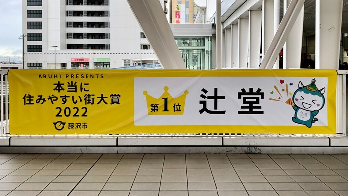

私は森田大葉(もりただいき)といいます。
出身地は神奈川県藤沢市の辻堂です。
辻堂は住みやすい街ランキングで１位になりました。

出身校は、神奈川県立七里ガ浜高等学校です。
僕の今の時間割はこうなっています。
| 月 | 火 | 水 | 木 | 金 | |
| １限 | Reading and Writing | 情報数学 | 情報数学 | ||
| ２限 | 基礎体育 | Comunication Skills | 教養数学 | ||
| ３限 | プログラミング 基礎演習 | 社会学入門 | プログラミング 基礎演習 | 情報リテラシー 演習 |
|
| ４限 | SDPBL | 情報リテラシー 演習 |